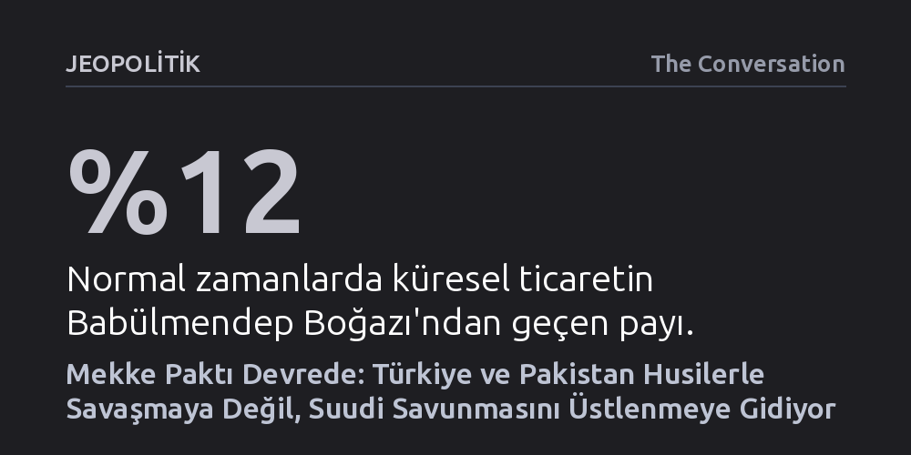

JEOPOLITIK · The Conversation · 2026-10-10
Mekke Paktı kapsamında Suudi Arabistan'a destek veren Türkiye ve Pakistan, Husilerle fiilen savaşmak yerine Krallığın hava savunmasını üstlenen bir kalkan rolü oynuyor. Bu hamle Riyad'ın Yemen taarruzuna odaklanmasını sağlarken müttefikleri ucu açık bir çatışma riskine yaklaştırıyor.
Türkiye'nin NATO sınırları dışında Orta Doğu'da bağlayıcı bir karşılıklı savunma kalkanı üstlenmesi, bölgesel krizlerde askeri angajman sınırlarının ve güvenlik mimarisinin kökten değiştiğini gösteriyor.

Suudi Arabistan, Türkiye ve Pakistan arasında imzalanan Mekke Karşılıklı Savunma Paktı, kuruluşunun üzerinden henüz iki ay geçmişken Yemen'deki Husi saldırıları nedeniyle fiilen yürürlüğe kondu. Husilerin stratejik Babülmendep Boğazı'nı kontrol altına alması üzerine Suudi Arabistan Savunma Bakanı Halid bin Selman'ın çağrısıyla toplanan üç ülke, ortak caydırıcılık tedbirlerini devreye sokma kararı aldı. Kararın alındığı gün Suudi destekli Yemen hükümet güçleri, bölge ülkelerinden sağlanan 100 savaş uçağının desteğiyle boğazı geri almak üzere geniş çaplı bir karşı taarruz başlattı.
İttifakın kâğıt üzerinde kalıp kalmayacağına dair kuşkular Ankara ve İslamabad'ın askeri güç gönderme taahhüdüyle dağılmış görünse de bu ilk sınav en dar çerçevede aşıldı. Müttefikler Suudi Arabistan'ın çağrısına yanıt verdi; ancak sahaya getirdikleri güç bir taarruz kılıcı değil, savunma kalkanı niteliğinde. Pakistan Savunma Bakanı Hace Asif'in açıklamaları da bu çerçeveyi netleştirdi: Türk ve Pakistan unsurları cephede Husilerle sıcak çatışmaya girmeyecek, sadece keşif ve hava savunması gibi kritik destek rollerini üstlenecek.
İttifak taahhütlerinin hayata geçirilmesinde iki müttefik arasında belirgin bir hız farkı göze çarpıyor. Pakistan; hâlihazırda Suudi Arabistan'da konuşlu yaklaşık 8.000 askeri, bir filo JF-17 savaş uçağı, insansız hava araçları ve kendi personelince işletilen HQ-9 hava savunma sistemiyle krallıkta zaten ciddi bir askeri güç bulunduruyor. Bu nedenle İslamabad'ın savunma desteği sahada derhal hissedilebilecek düzeyde.
Türkiye tarafında ise süreç anayasal sınırlara bağlı ilerliyor. Anayasa'nın 92. maddesi yurt dışına asker gönderilmesini Meclis onayına bağlı kılıyor ve anlaşmanın üzerinden iki ay geçmesine rağmen TBMM henüz tezkereyi onaylamış değil. Buna karşın ittifakın kurumsal mekanizmaları işlemeye başladı ve ilk genel sekreterliğe emekli Pakistanlı Korgeneral Numan Mahmud getirildi.
Pakistan'ın çizdiği bu kırmızı çizgi köklü bir tarihsel arka plana dayanıyor. Pakistan parlamentosu Nisan 2015'te Suudilerin Yemen'deki savaşına müdahil olmama yönünde oybirliğiyle karar almış, ancak İslam'ın kutsal mekânlarına bir tehdit yönelirse krallığın yanında duracağını taahhüt etmişti. İslamabad yönetimi bugünkü krizde de neredeyse aynı diplomatik dili kullanarak desteğini hiçbir hükümetin reddedemeyeceği kutsal toprakların müdafaasıyla sınırladı ve bölgesel bir çatışmanın içine çekilmekten kaçındı.
Mekke Paktı'nı NATO ile kıyaslamak ilk bakışta zayıf bir analoji gibi durabilir. NATO'nun 5. Maddesi arkasında 75 yıllık entegre komuta yapısını, ortak askeri standartları ve Amerikan nükleer şemsiyesini barındırıyor. Mekke Paktı ise sadece iki aylık bir metin ve yeni kurulan bir sekreteryadan ibaret. Ne var ki NATO'nun kolektif savunma maddesi de sanıldığı gibi otomatik devreye giren bir mekanizma değil; üyelere sadece gerekli gördükleri tedbiri alma esnekliği tanıyor.
Geçmişte Suriye iç savaşı Türkiye sınırına taştığında NATO müttefiklerinin Suriye'ye kara orduları sürmek yerine yalnızca Türkiye'nin hava savunmasını takviye etmeyi seçmesi, bugün Mekke Paktı'nın izlediği şablonla birebir örtüşüyor. Aralarındaki asıl ayrım caydırıcılıkta: NATO'nun gücü sınanmasına gerek kalmayacak kadar yüksekken, Mekke Paktı kurulduktan birkaç hafta sonra sıcak bir krizin ortasında kaldı.
Bu denklem Türkiye açısından daha önce görülmemiş bir hukuki tablo yaratıyor. NATO Antlaşması'nın 6. Maddesi kolektif savunma güvencesini Kuzey Atlantik bölgesiyle sınırlamaktadır. Dolayısıyla Riyad'da konuşlu bir Türk birliğinin Husi füzeleriyle vurulması halinde devreye NATO değil, sadece Mekke Paktı girecektir. Ankara böylece coğrafi ve hukuki sınırları birbiriyle hiçbir biçimde kesişmeyen iki ayrı kolektif savunma paktının merkezinde yer almaktadır.
Küresel ticaretin yaklaşık yüzde 12'sinin geçtiği Babülmendep Boğazı'nın yeniden açılması tek başına bu pakt ile sağlanamaz; bu sonuç Yemen hükümet güçlerinin sahadaki başarısına ve Suudi hava kuvvetlerine bağlı. Paktın oynadığı asıl rol çok daha ince bir stratejiye dayanıyor: Türk ve Pakistan hava savunma unsurlarının Suudi şehirlerini ve petrol altyapısını koruması, Suudi savaş uçaklarını ve pilotlarını Yemen semalarında taarruz yapabilmeleri için serbest bırakıyor. Riyad, Yemen'de hücuma geçebilmek için arkasını müttefiklerinden ördüğü bir kalkanla güvenceye alıyor.
Operasyondaki en büyük risk ise askeri terminolojide 'görev sapması' olarak bilinen hedeflerin kontrolden çıkması ihtimalidir. Yemen hükümet güçleri yalnızca boğazı kurtarmakla yetinmeyip 2014'ten beri Husilerin elinde bulunan başkent Sana'ya yürüyeceklerini ilan etmeye başladı. Boğazı açmaya yönelik sınırlı bir harekâtın ucu açık bir iç savaşa dönüşmesi müttefikler için ciddi bir tuzak barındırıyor. Pakistan Dışişleri Bakanı İshak Dar paktın kesinlikle savunma odaklı olduğunu vurgulasa da İslamabad'ın Aden'e dört kargo uçağı dolusu silah indirdiğine yönelik bilgiler bu sınırın ne denli kırılgan olduğunu gösteriyor.
Gelişmeler küresel satranç tahtasında da kritik yankılar buluyor. Washington'da Donald Trump yönetimi, Husilerin Amerikan gemilerine saldırmama güvencesi vermesi üzerine Riyad'ın hava saldırısı taleplerini geri çevirmişti. ABD Dışişleri Bakanı Marco Rubio Suudi Arabistan'a verilen güvenlik taahhütlerine uyulacağını söylese de bu desteğin sıcak çatışmayı değil istihbarat ve gözetleme yardımını kapsayacağı anlaşılıyor. Bu durum Mekke Paktı'nı Washington açısından bölgedeki yükü devreden elverişli bir araca dönüştürdü. Aynı zamanda Tahran ile ilişkilerini gözeten Pakistan, Suudi mevzilerini korumanın İran tarafından tolere edilebileceğini ancak Husilere yönelik bir saldırıya katılmanın kabul görmeyeceğini iyi biliyor. ABD çekildiğinde İsrail'in Suudi Arabistan'a yardım teklif ettiği, ancak Riyad'ın bu teklif yerine kutsal mekânlar meşruiyetini öne sürerek Müslüman müttefiklerini devreye soktuğu görülüyor. Paktın asıl sınavı, savaş uzadığında veya Suudi topraklarında bir Türk ya da Pakistan askeri hayatını kaybettiğinde birliklerin sınırın gerisinde kalıp kalamayacağı olacak.